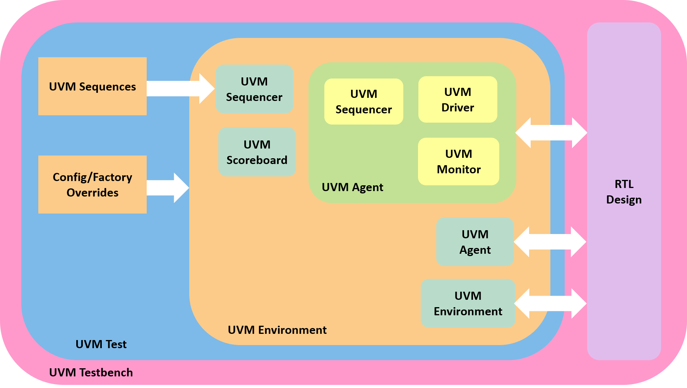

A Brief Introduction to UVM
Published on: January 14, 2025
Table of Contents
Prelude: I am going to write this later because I think I forgot UVM - will just use this post to summarize my notes as I am (re)learning :D
1. What is UVM?
UVM (Universal Verification Methodology) is a methodology built on top of SystemVerilog. It offers a standard set of base classes, macros, and guidelines to simplify and standardize the creation of testbenches across projects and teams.

11. Sample UVM Code
Some sample code, (testing some script I found online for text highlighting lol)
// my_transaction.sv
class my_transaction extends uvm_sequence_item;
rand bit [15:0] addr;
rand bit [7:0] data;
// Additional fields
// Use field automation macros for randomization and factory
`uvm_object_utils_begin(my_transaction)
`uvm_field_int(addr, UVM_ALL_ON)
`uvm_field_int(data, UVM_ALL_ON)
`uvm_object_utils_end
function new(string name = "my_transaction");
super.new(name);
endfunction
endclass
// my_sequence.sv
class my_sequence extends uvm_sequence #(my_transaction);
`uvm_object_utils(my_sequence)
function new(string name = "my_sequence");
super.new(name);
endfunction
virtual task body();
my_transaction tr;
repeat(10) begin
tr = my_transaction::type_id::create("tr");
if(!start_item(tr))
`uvm_fatal("SEQ", "Failed to start_item")
// randomize transaction
if(!tr.randomize())
`uvm_warning("SEQ", "Randomization failed")
finish_item(tr);
end
endtask
endclass
// my_driver.sv
class my_driver extends uvm_driver #(my_transaction);
`uvm_component_utils(my_driver)
function new(string name, uvm_component parent);
super.new(name, parent);
endfunction
virtual task run_phase(uvm_phase phase);
my_transaction tr;
forever begin
seq_item_port.get_next_item(tr);
// Drive signals to DUT based on tr.addr, tr.data, etc.
// e.g., bus_if.write_addr <= tr.addr;
// Indicate the item is done
seq_item_port.item_done();
end
endtask
endclass